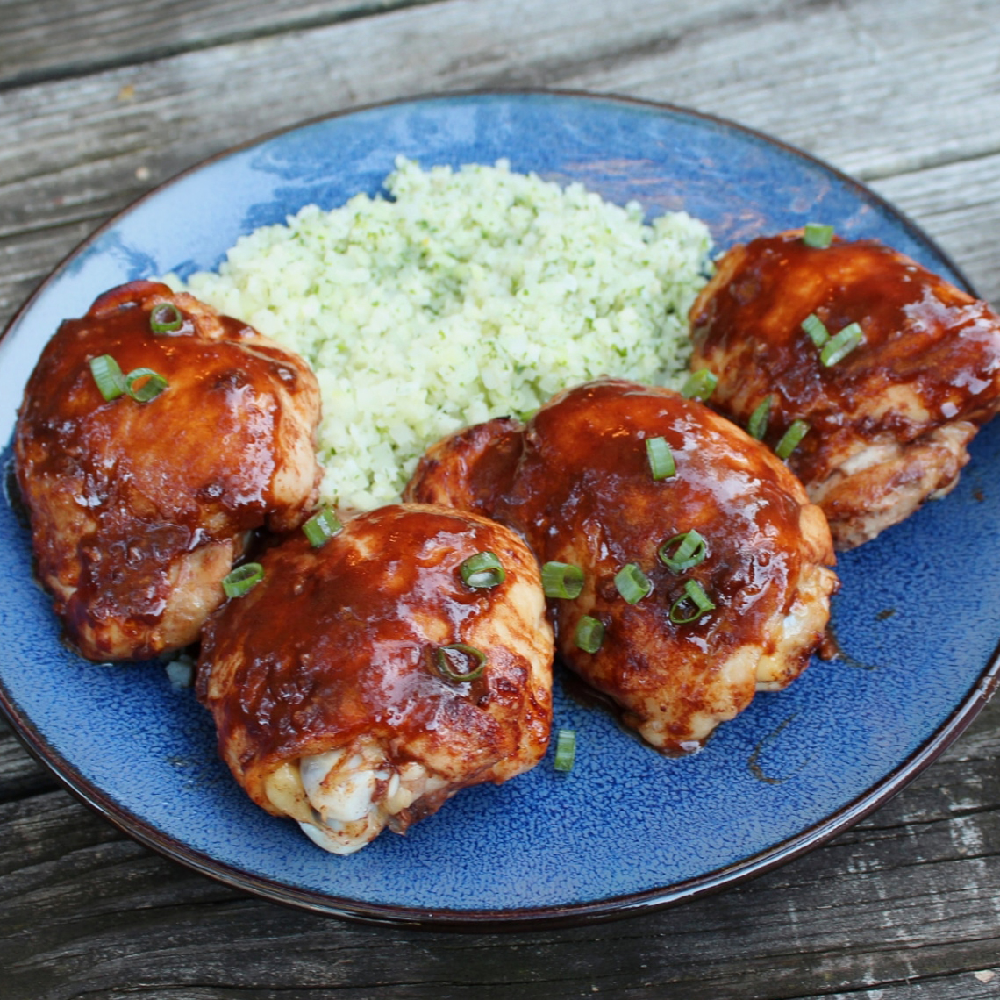

Asian Glazed Chicken Thighs

Description
These Asian chicken thighs are slightly spicy but the sweetness tames the heat. Delicious served with rice.
Ingredients
- ½ cup rice vinegar
- ⅓ cup soy sauce (such as Silver Swan®)
- 5 tablespoons honey
- ¼ cup Asian (toasted) sesame oil
- 3 tablespoons Asian chili garlic sauce
- 3 tablespoons minced garlic
- salt to taste
- 8 skinless, boneless chicken thighs
- 1 tablespoon chopped green onion (Optional)
Steps
- Whisk vinegar, soy sauce, honey, toasted sesame oil, chili garlic sauce, minced garlic, and salt together in a bowl. Pour 1/2 of the marinade into a resealable plastic bag; retain the other 1/2 of the marinade for the sauce. Place chicken thighs into the bag, coat with the marinade, squeeze out excess air, and seal the bag. Marinate in the refrigerator for 1 hour, turning the bag once or twice.
- Preheat the oven to 425 degrees F (220 degrees C). Meanwhile, pour reserved marinade into a saucepan over medium heat. Bring to a boil and simmer, stirring often, until thick, 3 to 5 minutes; set sauce aside.
- Remove chicken thighs from the marinade and shake off excess. Discard used marinade. Place chicken thighs into a 9x13-inch baking dish; brush with 1/3 of the thickened marinade from the saucepan.
- Bake in the preheated oven for 30 minutes, basting one more time after 10 minutes; an instant-read thermometer inserted into a chicken thigh should read 165 degrees F (75 degrees C). Let stand for 5 or 10 minutes.
- Bring sauce back to a boil for 1 minute; serve over chicken and sprinkle with green onions.